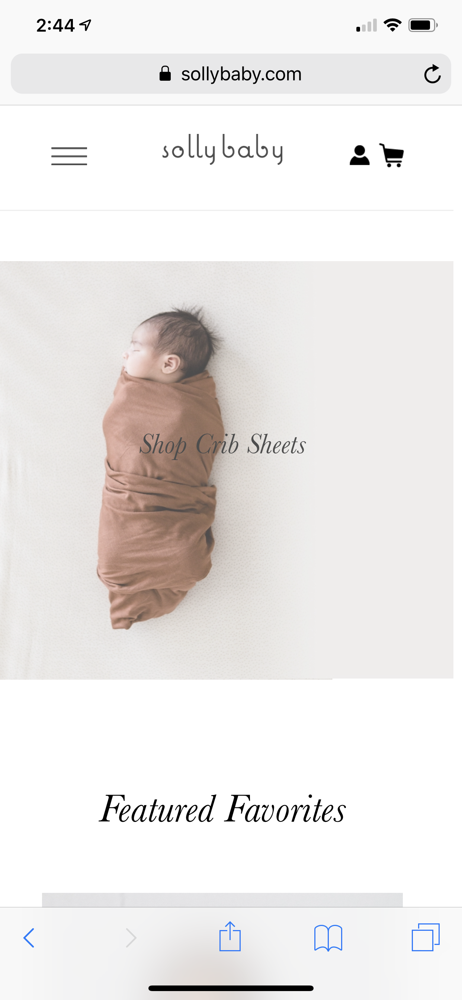

Alignment Principle

Wildbird
In this website we can appreciate the alignment principle in the pictures and in the text that they put, they have a continue alignment between each other and margin to keep it align.
Repetition Principle

Zara
At the top of this website they have the circles with the categories of clothes and they are a repetition of circles, which creates harmony even though is a repetition.
White Space and Clean Design
Solly Wrap
This website is very simple and even though it has a picture as a backgorund is creates the white spance putting some text on top of the picture and fading the picture. The colors and the position of the content are a clear example of clena design and organize, with not too much overload of content.